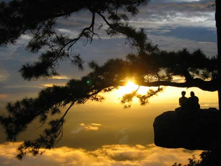

 |
| อันดับ 9 : ภูกระดึง ว่า กันว่าหากอยากพิสูจน์รักแท้ ให้พาคนที่เรารักไปร่วมพิสูจน์รักด้วยการเดินทางพิชิตยอดภูของ อุทยานแห่ง ชาติภูกระดึง และถ้าหากเขาคนนั้น สามารถร่วมเดินทางไปกับคุณจนกระทั่งถึงยอดดอย และคอยช่วยเหลือดูแลกันและ กันเป็นอย่างดีแล้วล่ะก็ เขาก็คือรักแท้ของเราเป็นแน่แท้ ...นี่คือตำนานคำกล่าวขานที่มักได้ยินเสมอๆ เมื่อเอ่ยถึง ภูกระดึง หรือ อุทยานแห่งชาติภูกระดึง ที่เป็นเช่นนี้ก็เพราะการที่เราจะขึ้นไปถึงยอดดอยได้ ต้องเดินเท้าเป็นระยะทางกว่า 9 กิโลเมตร คือขึ้นเขา 5 กิโลเมตร บวกทางราบอีกประมาณ 3-4 กิโลเมตร ซึ่งนอกจากจะมีคู่รักไปสัมผัสพิสูจน์รักแท้แล้ว ภูกระดึง มักจะได้รับความนิยมในการไปแบบกลุ่มเพื่อนๆ อีกด้วย และทุกคนที่ได้ไปสัมผัสต่างพูดเป็นเสียงเดียวกันว่า ตอนเดินเหนื่อยมาก ๆ แต่พอได้ไปสัมผัสกับธรรมชาติข้างบน ภูกระดึง แล้วคุ้มค่าสุด ๆ |